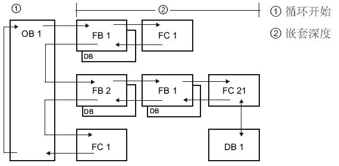

OB 组织块简介¶
OB 组织块¶
 什么是组织块?
什么是组织块?
组织块是操作系统和用户程序之间的接口。OB 用于执行具体的程序：
在 CPU 启动时
循环程序处理
在循环或延时时间到达时
当发生外部条件触发时
当发生故障、错误时
OB 内部调用 FB、FC，并且这些 FB、FC 还可以继续向下嵌套调用 FB、FC。除主程序和启动 OB 以外，其他 OB 的执行是根据各种中断条件（错误、时间、硬件等）来触发的，OB 无法被 FB、FC 调用。
每个组织块都有各自的优先级，在低优先级 OB 运行过程中，高优先级 OB 到来会打断低优先级执行。
以主循环程序为例，在没有其他 OB 执行时，程序循环中的程序，即主程序在周而复始的执行，当有高优先级中断（例如循环中断）出现时，立即停止主程序执行，转而执行高优先级中断 OB 的程序，当高优先级中断 OB 的程序执行完，则继续从中断处的主程序执行。两个不同优先级 OB 的程序之间的打断也是同样道理。
OB 事件¶
备注
组织块 OB 的类型
|
允许的数量 |
默认的优先级 |
|---|---|---|
程序循环（Program cycle） |
>=0 |
1 |
启动OB（Startup） |
>=0 |
1 |
时间中断（Time of day）** |
<=2 |
2 |
延时中断（Time delay interrupt）* |
<=4 |
OB 20：3 |
循环中断（Cyclic interrupt）* |
<=4 |
OB 30：8 |
硬件中断（Hardware interrupt） |
<=50 |
18 |
时间错误（Time error interrupt） |
<=1 |
22或26 |
诊断中断（Diagnostic error interrupt） |
<=1 |
5 |
插拔中断（Pull or plug of modules）** |
<=1 |
6 |
机架或站故障（Rack or station failure）** |
<=1 |
6 |
状态中断（Status）** |
<=1 |
4 |
更新中断（Update）** |
<=1 |
4 |
配置文件中断（Profile）** |
<=1 |
4 |
MC-Servo *** |
<=1 |
25 |
MC-Interpolator *** |
<=1 |
24 |
MC-PreServo **** |
<=1 |
- |
MC-PostServo **** |
<=1 |
- |
* V4.0 版本 CPU 以前，延时中断 OB + 循环中断 OB 数量 <=4
** V4.0 版本 CPU 开始支持
*** V4.1 版本 CPU 开始支持
**** V4.2 版本 CPU 开始支持
最后的 4 个 MC OB 是闭环运动控制使用，其中前两个是组态闭环 TO 轴自动生成，无法编写任何程序，系统内部使用，后两个是需要手动创建，使用参见链接。
主要组织块文档说明链接：
通信优先级¶
通信任务的优先级为 1。因为 1 是最低优先级，所以其他事件可以中断通信处理。其他事件导致的中断可能会对扫描周期的通信处理产生负面影响。可以调整"通信造成的周期负载"百分比，以增加专用于通信处理的扫描周期部分。 调整该参数，参见链接。
CPU 为每个 OB 优先级提供了临时（本地）存储器¶
1、16 KB 用于启动和程序循环（包括相关的 FB 和 FC）
2、6 KB 用于其他中断事件（包括 FB 和 FC）
嵌套深度：是指可从 OB 调用功能 (FC) 或功能块 (FB) 等程序代码块的深度¶
如图 1 所示。
1、从程序循环 OB 或启动 OB 开始调用 FC 和 FB 等程序代码块，嵌套深度为 16 层；
2、从其他中断 OB 开始调用 FC 和 FB 等程序代码块，嵌套深度为 6 层。
注意：安全程序嵌套深度为 4 层。

图 1. 嵌套深度